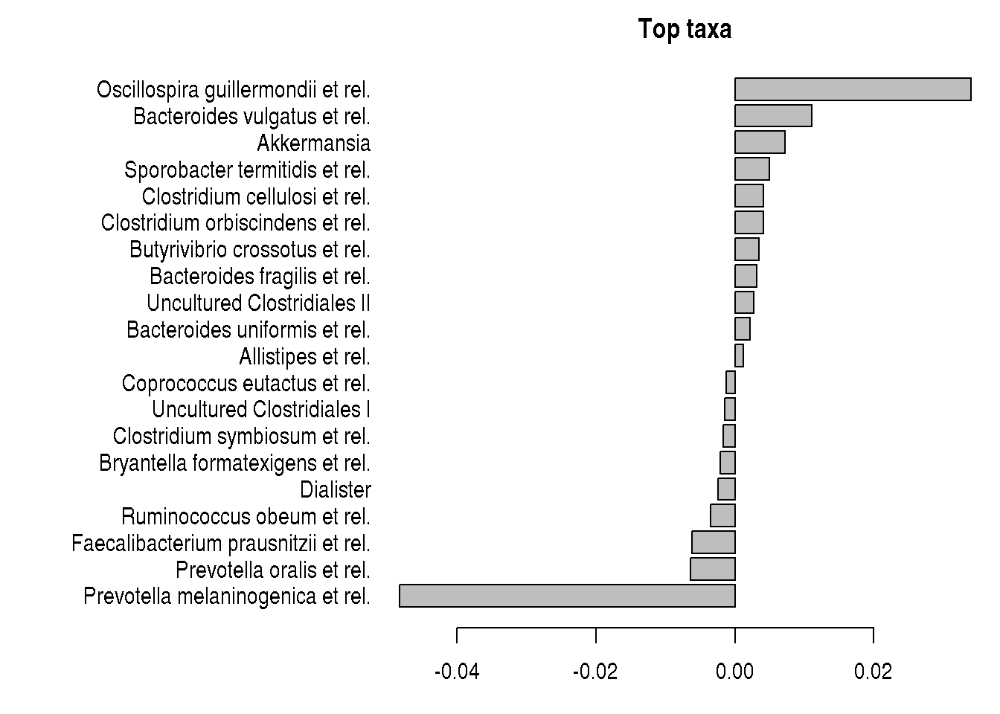

7 Multivariate comparisons of microbial community composition
The above examples focus on comparison per individual taxonomic group. Often, the groups are correlated and we are interested in comparing the overall community composition.
7.1 PERMANOVA
Permutational multivariate analysis of variance further reading. See also statmethods.
library(vegan)
pseq <- dietswap
# Pick relative abundances (compositional) and sample metadata
pseq.rel <- microbiome::transform(pseq, "compositional")
otu <- abundances(pseq.rel)
meta <- meta(pseq.rel)
# samples x species as input
library(vegan)
permanova <- adonis(t(otu) ~ group,
data = meta, permutations=99, method = "bray")
# P-value
print(as.data.frame(permanova$aov.tab)["group", "Pr(>F)"])## [1] 0.047.2 Checking the homogeneity condition
Type ?betadisper in R console for more information.
# Note the assumption of similar multivariate spread among the groups
# ie. analogous to variance homogeneity
# Here the groups have signif. different spreads and
# permanova result may be potentially explained by that.
dist <- vegdist(t(otu))
anova(betadisper(dist, meta$group))## Analysis of Variance Table
##
## Response: Distances
## Df Sum Sq Mean Sq F value Pr(>F)
## Groups 2 0.01252 0.006262 0.6649 0.5154
## Residuals 219 2.06254 0.009418permutest(betadisper(dist, meta$group), pairwise = TRUE)##
## Permutation test for homogeneity of multivariate dispersions
## Permutation: free
## Number of permutations: 999
##
## Response: Distances
## Df Sum Sq Mean Sq F N.Perm Pr(>F)
## Groups 2 0.01252 0.006262 0.6649 999 0.518
## Residuals 219 2.06254 0.009418
##
## Pairwise comparisons:
## (Observed p-value below diagonal, permuted p-value above diagonal)
## DI ED HE
## DI 0.43000 0.711
## ED 0.44203 0.329
## HE 0.69469 0.30560We can also check which taxa contribute most to the community differences. Are these same or different compared to DESeq2?
coef <- coefficients(permanova)["group1",]
top.coef <- coef[rev(order(abs(coef)))[1:20]]
par(mar = c(3, 14, 2, 1))
barplot(sort(top.coef), horiz = T, las = 1, main = "Top taxa")